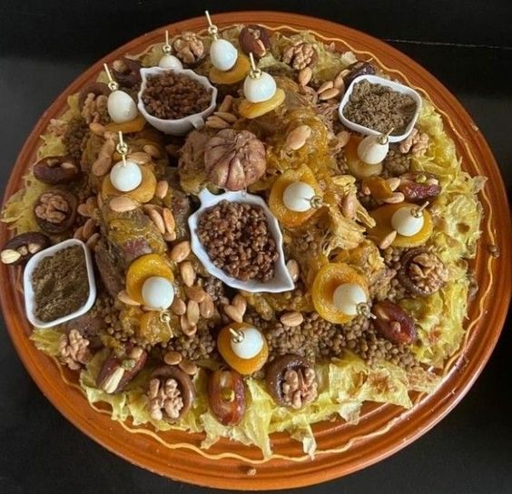
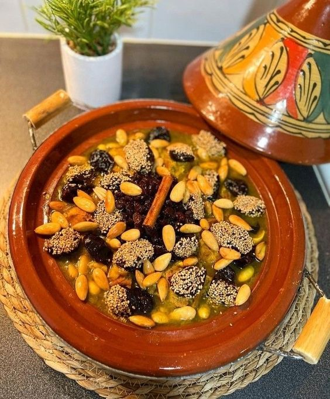
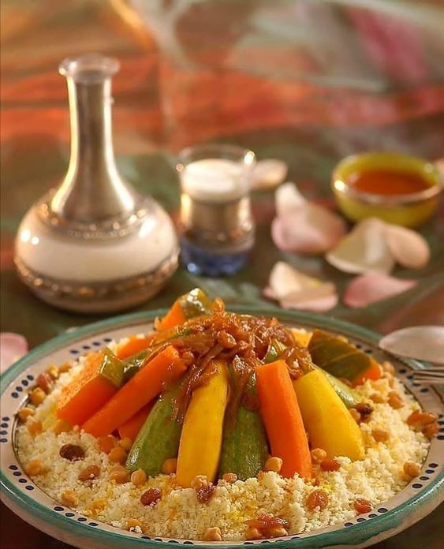
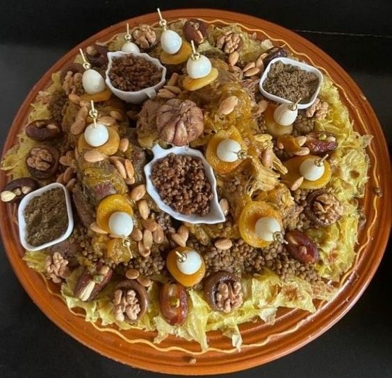
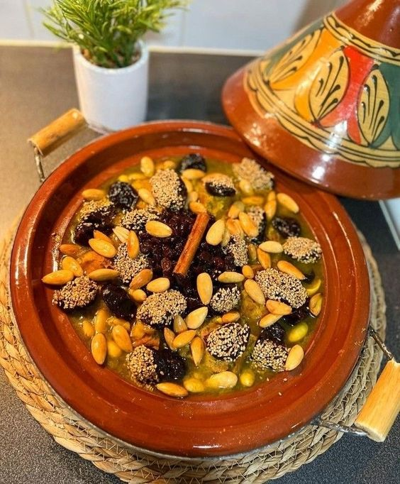
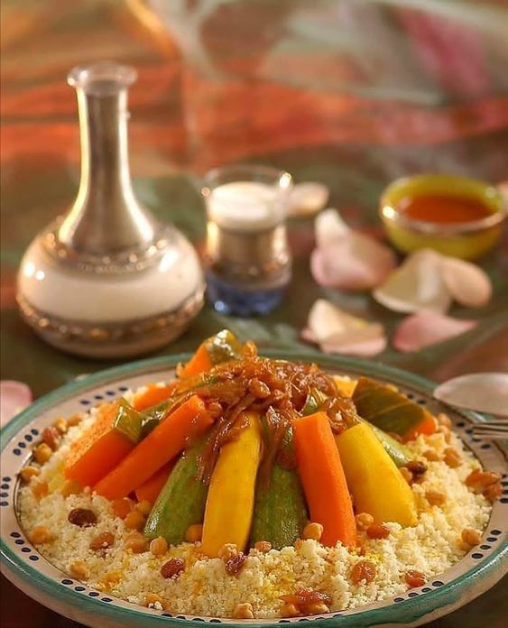

Art Culinaire

L'art culinaire au Maroc se distingue par sa diversité et sa richesse, car il reflète le patrimoine culturel du pays. Il se compose d'une variété de saveurs, d'arômes et de couleurs étonnantes d'épices. C'est vraiment un délice pour les sens.
 






Les traditions culinaires au Maroc se caractérisent par une ambiance conviviale et de partage, mais boire du thé est une nécessité, il est servi à toute heure accompagné de patisseries succulentes très variées réalisées majoritairment à base d’amandes et fleur d’oranger.


En 2014, le Maroc a été classé deuxième destination culinaire au monde par le site de blogs britannique Worldsim. En octobre 2018, c'était au tour du journal espagnol « La Razon » de mettre à l'honneur la cuisine marocaine, en lui décernant le prix de la Meilleure Destination Gourmande Internationale. Ce sont désormais 15 restaurants marocains qui figurent dans la liste des 1000 meilleurs restaurants du monde.